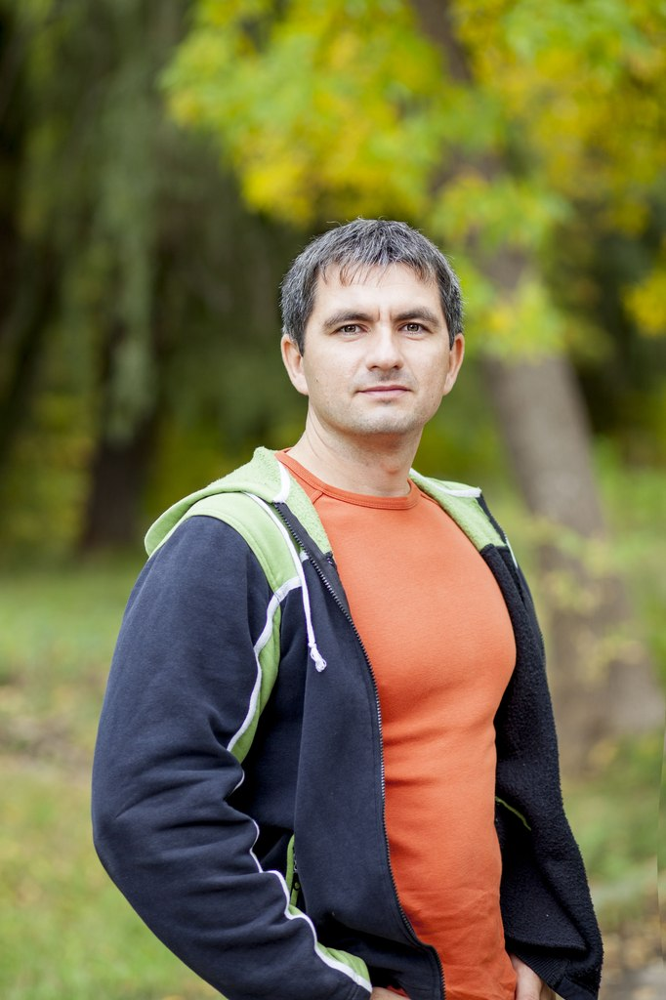

|  |
Чеботарев Николай Евгеньевич |
Дата рождения:
7 марта 1980г.
Гражданство:
Гражданин Украины
Телефон:
+3 (095) 89-88-234
эл. почта:
095i063@gmail.com
|
Семейное положение:
женат, есть дочь.
Желаемый график работы:
полный рабочий день.
|
Цель
Соискание должности Web-разработчика, программирование на PHP
Образование
- 2000г. Донецкий экономико-правовой кооперативный техникум
Банковское дело;
- 2003г. Европейский университет
Финансы;
- 2014г. Учебный центр "БЕЙСИК"
Курс HTML 5 и CSS 3;
Опыт работы
- 1999-2001г. Дзержинского городское отделение ПФУ
Должность: системный администратор;
- Сопровождение и обновление корпоративного программного обеспечения;
- Устранение аварийных ситуаций, связанных с повреждением программного обеспечения и баз данных;
- Организация, тестирование и обучение сотрудников предприятия основам компьютерной грамотности и работе с прикладными программными средствами;
- 2001-2002г. ПАТ "Укрсоцбанк" Дзержинский филиал
Должность: ведущий инженер-программист;
- Сопровождение и обновление корпоративного программного обеспечения;
- Устранение аварийных ситуаций, связанных с повреждением программного обеспечения и баз данных;
- Проведение компьютерных антивирусных мероприятий;
- Обеспечение обмена информацией локальной сети с внешними организациями по телекоммуникационным каналам;
- Проведение тестирования и ремонта отдельных устройств, средств вычислительной техники, кабельных линий локальной сети;
- 2002 г. по настоящее время ПЕ "Дзержинсктеплосеть"
Должность: инженер-программист;
- Обеспечение ведения компьютерных баз данных;
- Устранение аварийных ситуаций, связанных с повреждением программного обеспечения и баз данных;
- Проведение компьютерных антивирусных мероприятий;
- Обеспечение обмена информацией локальной сети с внешними организациями по телекоммуникационным каналам;
- Проведение тестирования и ремонта отдельных устройств, средств вычислительной техники, кабельных линий локальной сети;
Профессиональные навыки и знания
- Знание программного обеспечения и сетевого оборудования для малых и средних сетей;
- Знание различных конфигураций компьютера, операционных систем и сетевых стандартов;
- Умение обеспечить информационную безопасность компьютерной сети
- Сопровождение и обслуживание корпоративных веб-сайтов
Знание иностроанных языков
- Английский язык - начальный уровень
Прочее
- Работоспособность, системность мышления;
- Усидчивость, внимательность;
- Ответственность за достижение результата